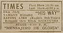

|
j
a v a s c r i p t |
Pg.3/3
October 22, 1943
I put my handkerchief away as Schaer came by and sat at my booth. After a moment I looked up at him and said brightly: "Just got a letter from Joe. He's all right." Schaer was looking away at a wall painting.

Later I ducked into the Times Theater where the Japanese film His Way was playing. I really wanted to see the final edition of the Daitoa News and the first edition of the New Philippine News. The Times Theater was practically empty — probably the smallest crowd it has had in many months — and this despite a high-class vaudeville. The revenue loss will be terrific until American pictures are allowed again. The Daitoa News was a typical summary of war developments from December 8 to October 14 — very poor propaganda. The New Philippine News was about the independence program of October 14. It had a very comical scene: After Laurel's speech, who should break into wild applause but Aquino — looking like his old self — a squirrel. But he was too quick on the trigger. The crowd's applause was so small that it made Aquino look like a one-man barker at a vaudeville show, trying to stir up enthusiasm in an otherwise bored audience. There was a glimpse of the National Assembly meeting in which Laurel was elected "unanimously." He strode up in magnifico style as the boys patted him and laughed. Alunan was especially forward in yelling, "Mabuhay." I noticed because Alunan is no friend of Laurel by any means. Oh well, all life's a stage. |
|
|
|
|